QGISのジオリファレンサーを使用する
GeoTIFF形式の画像データを作る
GeoTIFFとは
GeoTIFFとは、TIFF形式の画像ファイルに地理空間（ジオリファレンス）情報のタグが埋め込まれた画像データです。GeoTIFFファイルは、ラスターデータとしてQGISなどのGIS上に表示することができます。
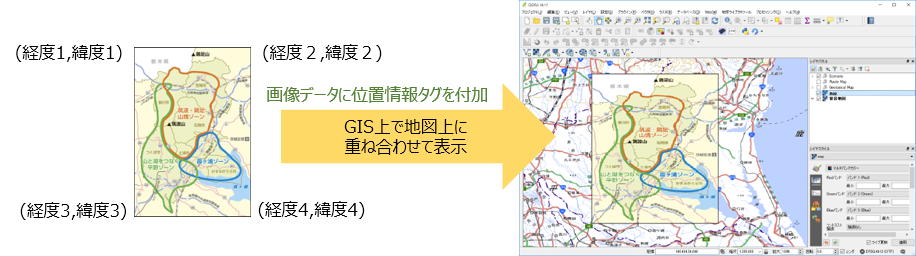
QGISのGDALジオリファレンサー プラグインを使用する
QGISでGeoTIFFファイルを作成するには、 「GDALジオリファレンサー」プラグインを使用します。
下図のように、 [プラグイン]-[プラグインの管理とインストール…] をクリックして、プラグイン管理ダイアログの「インストール済」タブに「GDALジオリファレンサー」が表示されれば、GDALジオリファレンサーはインストールされています。
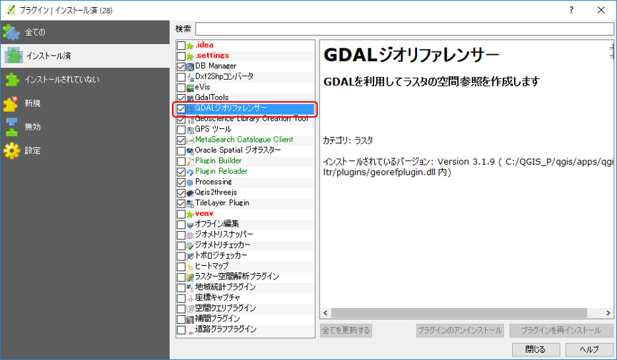
GDALジオリファレンサープラグインは、QGISのインストール時に一緒にインストールされます。もし、GDALジオリファレンサープラグインがインストールされていないようであれば、QGISを再インストールする必要があります。
GeoTIFFの作成方法
【既存の画像データからGeoTIFFを作成する】
QGISで既存の画像データからGeoTIFFを作成するには、GDALジオリファレンサーを使用して、以下の手順で行います。
① [ラスタ]-[ジオリファレンサ]-[ジオリファレンサ] をクリックします。
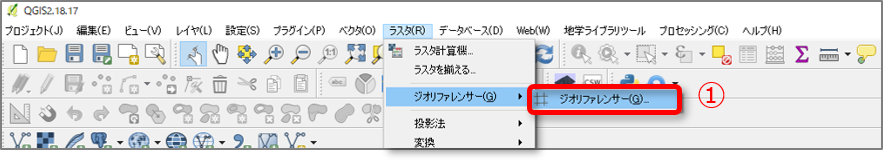
⓶ ジオリファレンサーの画面が表示されたら、[ファイル]-[ラスタを開く…] をクリックします。
③ ファイル選択ダイアログが表示されたら、変換元の画像ファイルを選択して、[開く] をクリックします。
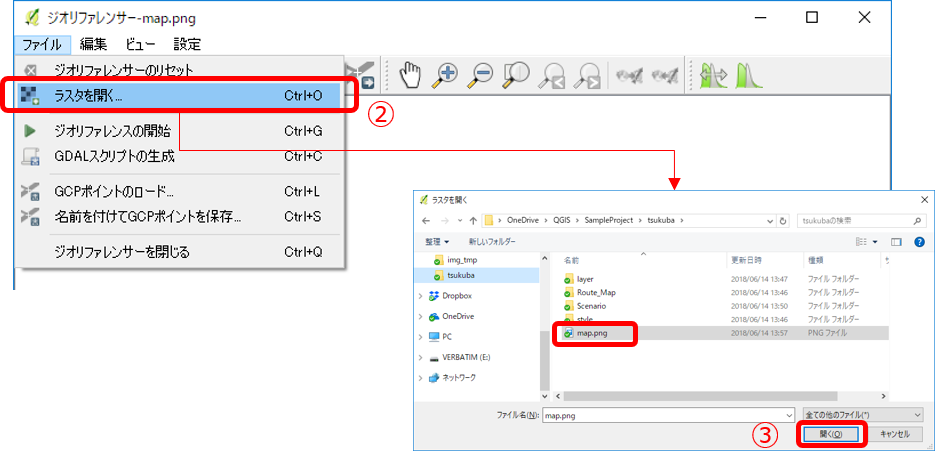
④ 「空間参照システム選択」の画面が表示されたら、プロジェクトで使用しているものと同じCRSを選択して、[OK] をクリックします。
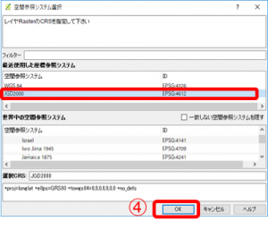
⑤ ジオリファレンサー画面に、③で選択した画像が表示されます。「ポイントの追加」アイコン（または [編集]-[ポイントの追加] ）をクリックして、ポイントの追加モードの状態にします。
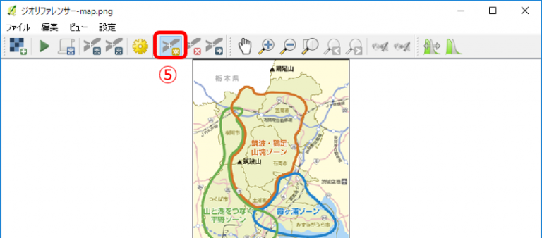
⑥ マウスホイールや、カーソルキーを使用して画像を拡大し、座標参照を行いたい箇所に十字のマウスカーソルをあててクリックし、ポイントを追加します。
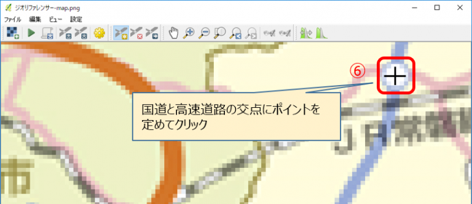
⑦ 「地図座標を入力」ダイアログが表示されたら、[マップキャンバスより] をクリックします。
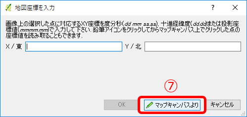
⑧ QGISのマップキャンバスを表示し、⑦で指定したポイントに対応するQGISマップキャンバス上の座標をクリックします。
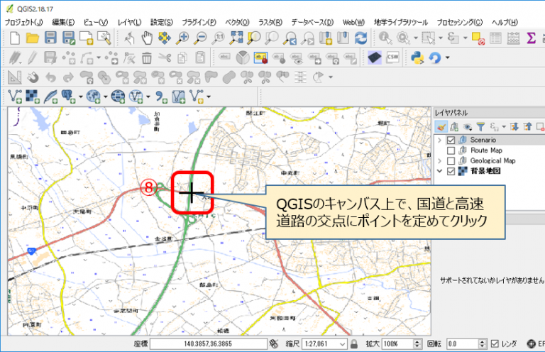
⑨ 「地図座標を入力」ダイアログ が表示され、座標が入力されていることを確認したら、[OK] をクリックします。
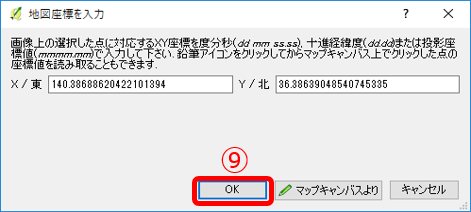
⑩ ジオレファレンサー画面で、指定した箇所にポイント（赤点）が追加されていることを確認します。
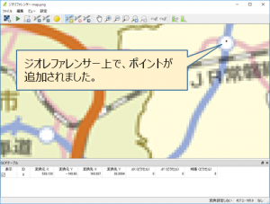
⑪ 上記⑥～⑩の作業を繰り返して行い、複数ポイント（３か所以上）を追加します。
⑫ ジオリファレンスポイントの追加が完了したら、ジオリファレンスを行います。「ジオリファレンスの開始」アイコン（または [ファイル]-[ジオリファレンスの開始] ）をクリックします。
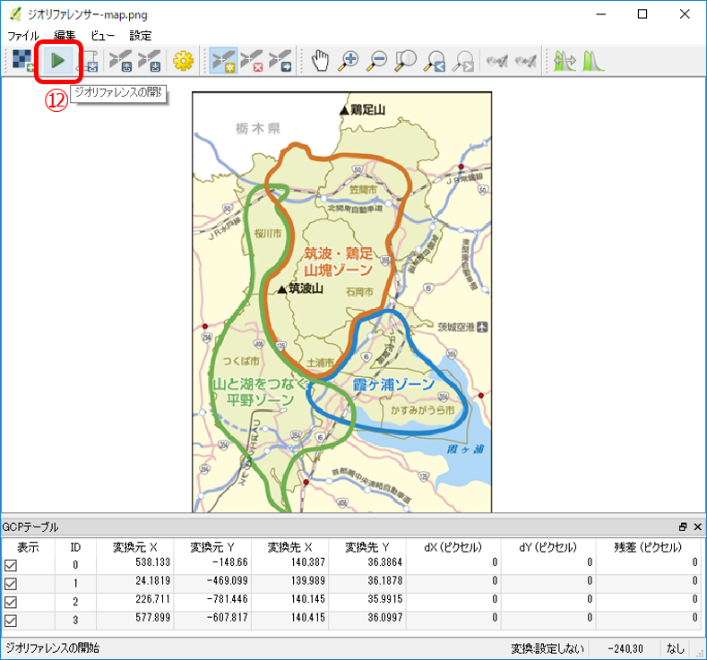
この図の例では、４か所ポイントを設定しています。リファレンスポイントは、なるべく離れた地点（画像の隅に近い点）を設定することで、制度のよいジオリファレンスが行えます。
⑬ 「変換タイプを設定してください」のメッセージが表示されたら、[OK] をクリックします。
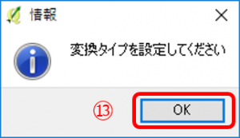
⑭ 「変換の設定」ダイアログが表示されたら、各種項目の設定を行い [OK] をクリックします。以下の設定は必ず行ってください。
・ 出力ラスタ：生成するGeoTiffファイルの保存場所と名前を指定します。
・「完了時にQGISにロードする」：チェックします。
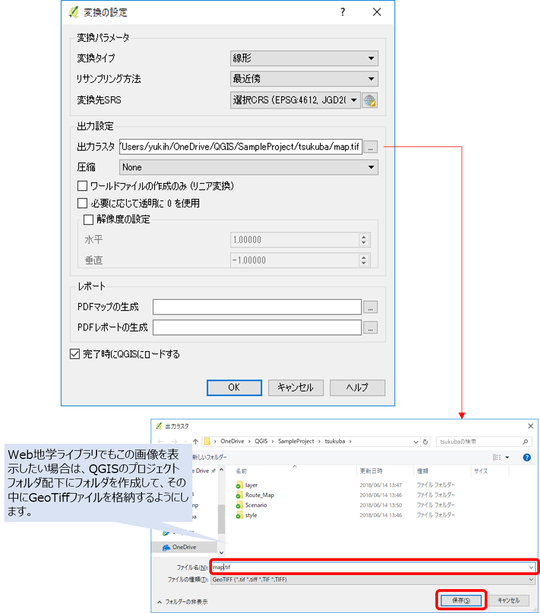
⑮ 「変換の設定」が終了したら、ジオリファレンサー画面で 「ジオリファレンスの開始」アイコン（または [ファイル]-[ジオリファレンスの開始] ）をクリックするとジオリファレンスが開始され、GeoTiffファイルが生成されます。
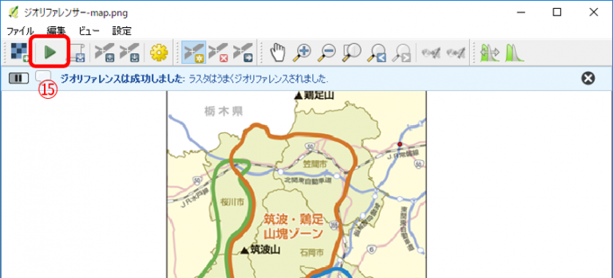
⑯ QGISでは、ラスタレイヤとしてジオリファレンスされたGeoTiff画像が表示されます。
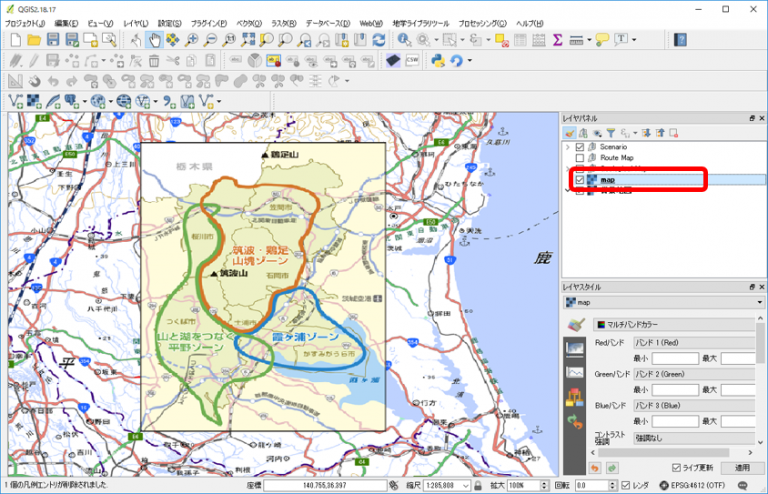